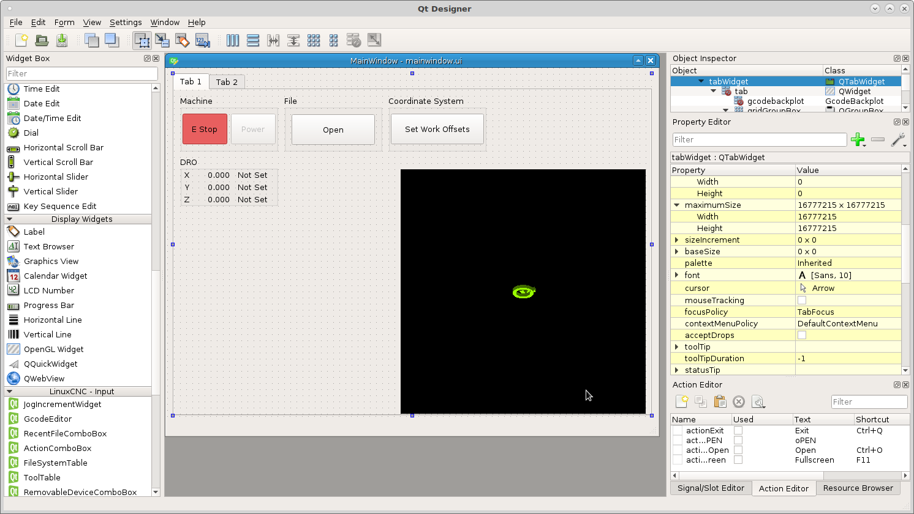
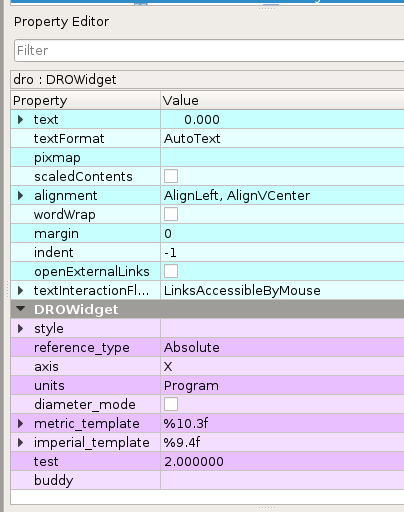
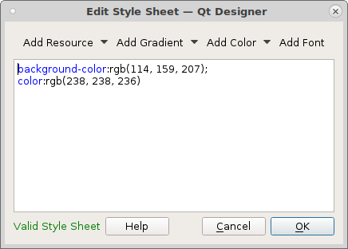
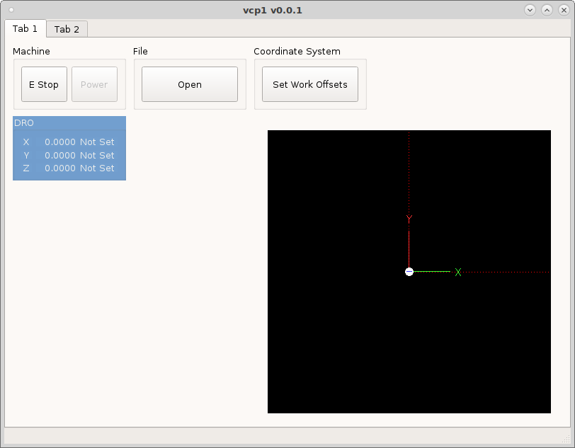
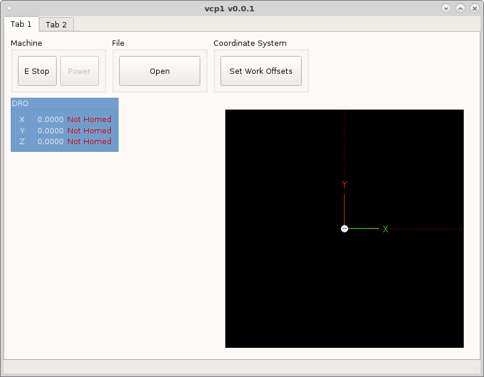

DRO Tutorial
To add a DRO to your VCP drag three DROWidgets from the LinuxCNC Display section into a group box. Place three StatusLabels to the right side of the DROWidgets and three Labels on the left side. Change the maximumSize Width to 15 for the three labels and change the alignment to center and name them X, Y and Z.
{kind=link}
In the Property Editor scroll down to the DROWidget section. Here you can set the DRO properties for each DROWidget.
{kind=link}
reference_type Absolute, Distance to Go or Relative
axis select the axis to track
units select from fixed units of Inch or Metric or currently running Program units
diameter_mode is for a lathe
metric_template allows you to set the number format for metric units
imperial_template allows you to set the number format for inch units
number format %3.2f will display as 123.40
In the QWidget section you can modify the font, size and colors of the DRO group box.
To change the colors click on the ellipse in styleSheet to open the Edit Style Sheet dialog. To change the background color click on the down arrow to the right of Color and select background-color then click on the color you want. To add a second item pick the item from the color dropdown then pick the color.
{kind=link}
Now when we run the vcp we can see the DRO.
{kind=link}
Next edit the statusLabel for each DRO to show if the axis is homed or not.
Double click to open the rules editor and add a rule and a channel. The
channel is status:joint[0].homed for the X axis and the expression is
'Homed' if ch[0] else 'Not Homed'.
{kind=link}
Repeat for the remaining axes with status:joint[1].homed for Y and
status:joint[2].homed for Z. The expression is the same for all the axes.
Now save and run the VCP.
{kind=link}
Next we will change the color of the text when homed and not homed. Double click
on the status label for X axis and add a new rule and select Style Sheet then
add a channel status:joint[0].homed and add the expression
"color:rgb(115, 210, 22)" if ch[0] else "color:rgb(204, 0, 0)". Which reads
set the color of the text to green if ch[0] is true else set the color to red.
Remember to use a label stylesheet to get the correct syntax and color.
{kind=link}
Now we can see the status label text is red because we have not homed yet.
{kind=link}